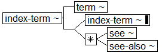
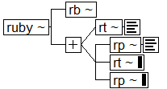

Book Interchange Tag Suite (BITS) Version 1.0 Tag Library Version 1.0
Digital Archive of Journal Articles
National Center for Biotechnology Information (NCBI)
National Library of Medicine (NLM)
Inline Structures
Index Term
structure diagram

Ruby Annotation Wrapper
structure diagram
